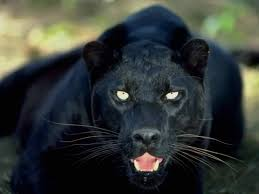

A black panther is the melanistic color variant of any Panthera species.
It turns out many of us have even the most basic of panther facts wrong. We tend to assume that a panther is an entirely separate species of big cat.
However, when we discuss panther facts, we usually actually meaneither jaguar or leopard facts, depending on the geographic location.
This is because a panther is defined as a melanistic color variant of other species in the Panthera genus, which includes tigers, lions, jaguars and leopards.
This color variant usually means that the cat is black or dark brown, since melanism is the development of melanin,
a dark-colored pigment in the skin.
Black panthers in Asia and Africa are leopards (Panthera pardus) and black panthers in the Americas are black jaguars (Panthera onca).
Fast facts about panthers: